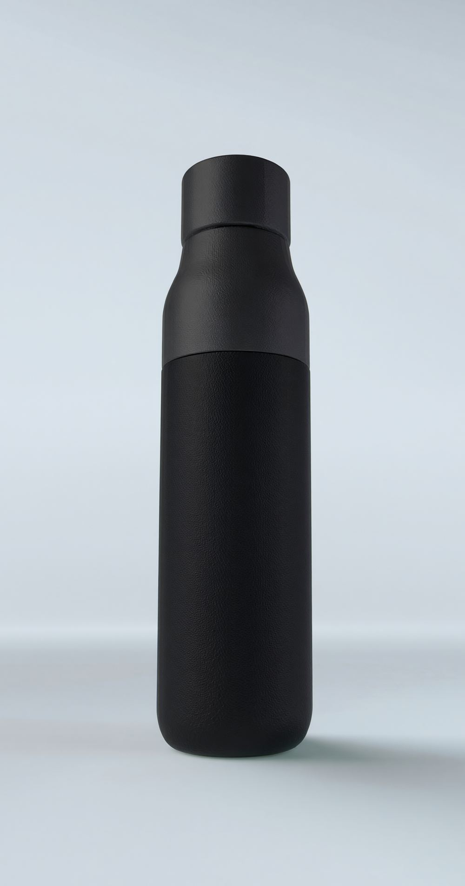
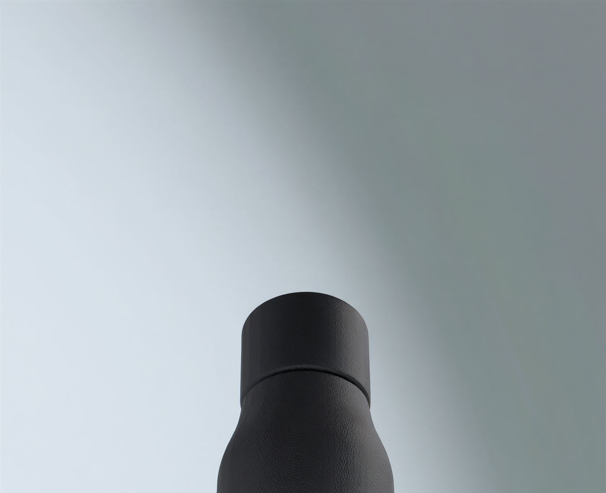
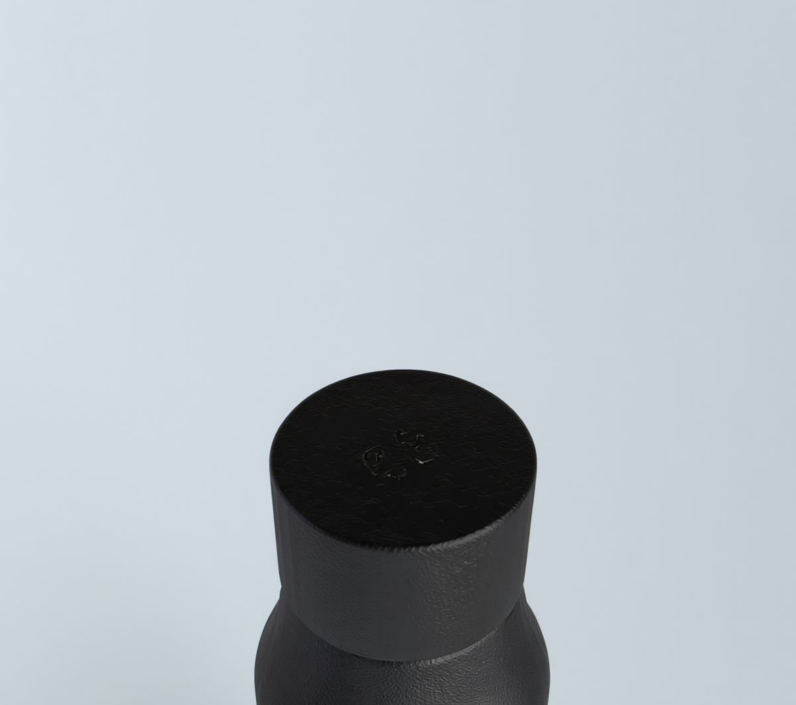
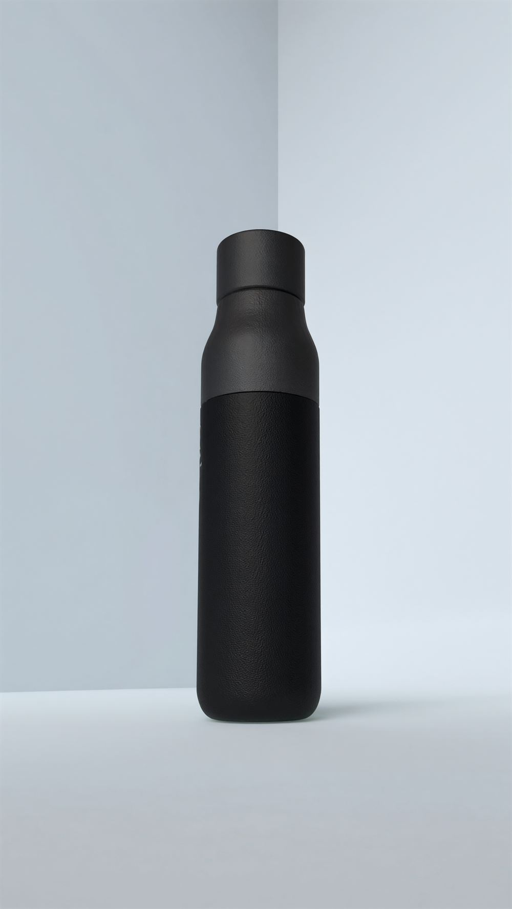

Llenala a la tarde.
A la noche sigue a 79°.
Brasa es una botella térmica de doble pared con tapón cebador. Para el mate de la plaza, la ruta o la oficina.
Desde · cuotas
-
1 L · 750 ml
Doble pared al vacío
Dos paredes de acero con vacío en el medio. El calor no tiene por dónde salir y la botella no quema por fuera.
-
85° → 79°
79° a las 12 horas
La cargás a 85° a las cuatro de la tarde y a las cuatro de la mañana todavía da para un mate decente.
-
un toque
Tapón cebador sin goteo
Apretás el botón de la tapa, cae un chorro finito y corta seco. No hay que desenroscar nada para cebar.
-
boca 40 mm
Boca ancha para llenar
La tapa sale entera. Entra la pava sin embudo y entra la mano con la esponja para lavarla.
-
grabado láser
El nombre, grabado
BRASA va grabado al frente. Atrás podés grabar hasta 14 letras: tu nombre, el de la ronda o una fecha.
Una tarde que se estira
hasta la madrugada.
Lo que pasa con el agua adentro de una Brasa de 1 L, cargada una vez y sin volver a calentar.
-
85°
Pava en el fuego hasta antes de hervir. Cargás la botella, la tirás en la mochila y salís a la plaza.
-
84°
La ronda se agranda. Cada uno ceba el suyo con un toque al botón y nadie se quema los dedos.
-
82°
Se fue el sol y refresca. El último mate de la plaza sale igual de caliente que el primero.
-
80°
Ya en casa, con la yerba lavada. Queda agua para el té de antes de dormir.
-
79°
Doce horas después. Si salís a la ruta temprano, el primer mate del día ya está resuelto.
De cerca.



- Capacidad
- 750 ml · 1 L
- Temperatura
- 79° a las 12 h
- Material
- Acero 18/8, pintura mate
- Peso
- 410 g · 480 g
- Alto
- 26 cm · 30 cm

Arrastrá la botella para girarla.
Reservá la tuya.
Elegí el tamaño y, si querés, grabale un nombre. Lo ves en la botella mientras escribís.
Los que ya ceban con Brasa.
-
“La cargo a la mañana para el laburo y a la vuelta, en el tren, todavía me tomo dos.”
Lucía · Haedo
-
“Lo del botón parecía un chiche. Ahora no vuelvo a desenroscar un termo en la ruta.”
Martín · Rosario
-
“Le grabé el nombre de la ronda de los domingos y ya nadie se la lleva por error.”
Caro · Mar del Plata
Preguntas.
¿Cuánto mantiene el agua caliente?
Cargada a 85°, está a 79° a las 12 horas con la tapa cerrada. Si la abrís seguido, baja un poco más rápido.
¿Sirve para agua fría?
Sí. La doble pared funciona igual al revés: el agua fría sigue fría unas 24 horas.
¿Se puede lavar en el lavavajillas?
Mejor a mano. La boca ancha deja entrar la esponja y la tapa se desarma en dos piezas para lavarla.
¿Qué puedo grabar?
Hasta 14 caracteres: letras, números, espacios y . & ' -. El grabado va atrás, en vertical, como el BRASA del frente.
¿Cómo se paga?
En cuotas con tarjeta. En esta demo no se cobra nada: la reserva es de mentira.
